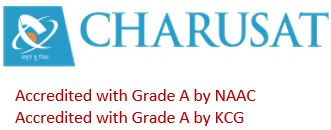

Home
University info
Computer Engineering
IT Engineering
Electronics and Communication
Electrical Engineering
Mechanical Engineering
Civil Engineering
Faculties
Computer Engineering
IT Engineering
Electronics and Communication
Electrical Engineering
Mechanical Engineering
Civil Engineering
Programme
Sports
Cultural
Events
Seminars
Workshops
Placements
Contact us
Charotar University of Science and Technology - CHARUSAT has been conceived by Shri Charotar Moti Sattavis Patidar Kelavani Mandal to put India on global education map by making Charotar – the Land of Sardar Patel the Global Education Hub. Kelavani Mandal, established in 1994, is a not for profit premier trust of India that works with the mission of social service through education. It has social lineage of more than 118 years from its parent organization Shri Charotar Moti Sattavis Leuva Patidar Samaj– Matrusanstha- known for its dynamic social revolution brought about by initiating Mass Marriages on a massive scale. Following some reflective discussions (during the centenary celebrations of Matrusanstha in 1993-94) on the activities of the Samaj since its birth, and the challenges facing the development of India in the context of liberalization, privatization and globalization of Indian economy, the Samaj decided to create a dedicated organization for knowledge creation and dissemination. The Samaj created an educational trust Shri Charotar Moti Sattavis Patidar Kelavani Mandal in 1994 with the distinct objective of creating and developing state-of-the-art educational facilities. The trust is a democratically managed institution with three layers of governance and is known for its transparent functioning and its integrity. Thus, the formation of Kelavani Mandal through Matrusanstha, ultimately led to the establishment of CHARUSAT. It was illuminated under the leadership of two former Presidents - Late Shri Chhotabhai Bhikhabhai Patel and Late Dr. K C Patel. Late Shri Chhotabhai Bhikhabhai Patel, an illustrious businessman and social leader based in Mumbai and founder President of Kelavani Mandal, always insisted on Global Standards. Late Dr. K C Patel, a renowned nuclear scientist and a prominent educationist of Gujarat, who succeeded Shri Chhotabhai Bhikhabhai Patel, dreamt of a university at Education Campus, Changa (ECC).